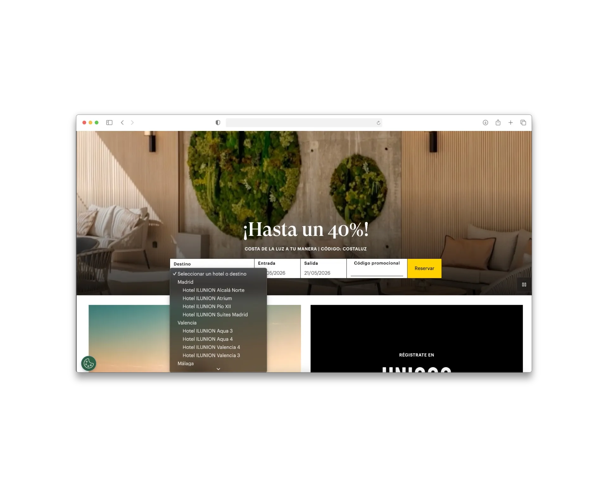
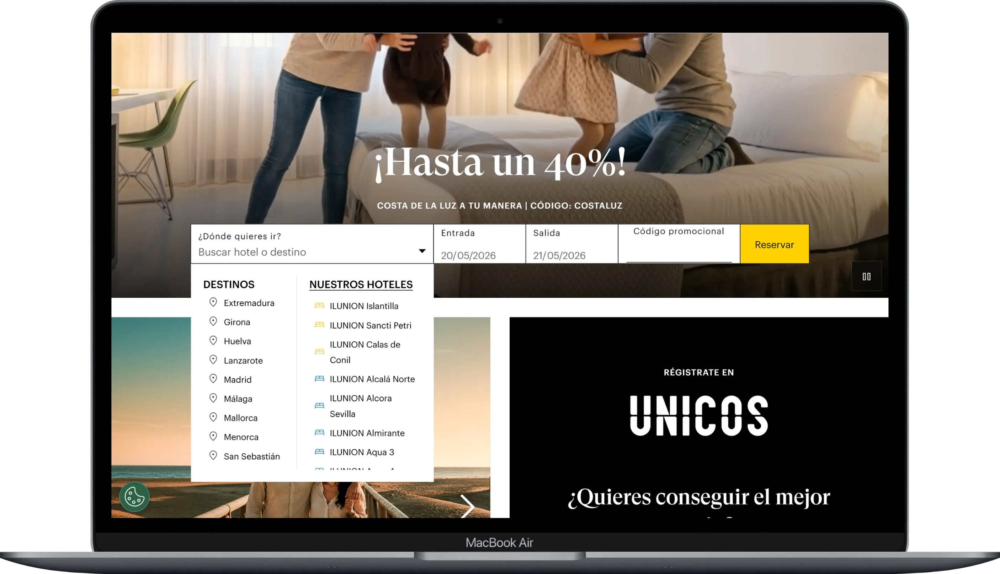
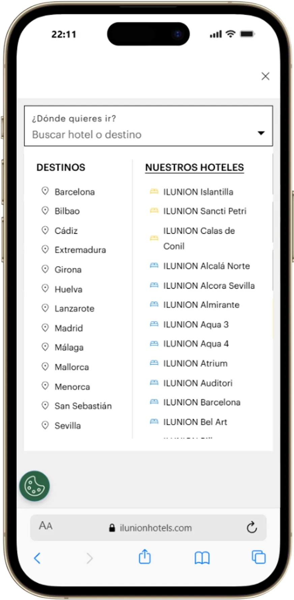

Contexto de negocio (SITUATION)
En ILUNION Hotels, el motor de reservas es uno de los principales puntos de conversión del canal directo. Gran parte del tráfico provenía de campañas de Paid Media con alta intención de compra, pero el acceso al motor presentaba fricción dentro del customer journey digital.
El componente convivía con múltiples objetivos de negocio:
- promociones
- branding
- fidelización
- y contenido inspiracional.
Esto generaba una experiencia poco clara para usuarios que llegaban con una intención directa de reservar. El acceso al motor aparecía en puntos clave del ecosistema digital, pero el comportamiento del usuario mostraba señales claras de fricción:
- usuarios que no iniciaban búsqueda
- navegación innecesaria
- abandono temprano
- y dificultades para localizar rápidamente el acceso al motor.
El reto y el problema (TASK)
El reto consistía en analizar el comportamiento del acceso al motor desde una perspectiva UX y CRO para detectar puntos de abandono y proponer una solución más clara, escalable y alineada con los objetivos comerciales.
La solución debía:
- funcionar correctamente en desktop y mobile
- convivir con campañas activas
- mantener coherencia con la identidad visual
- y adaptarse a las limitaciones técnicas de Adobe Experience Manager.
El problema principal no era visual. La experiencia estaba construida desde una lógica más corporativa e inspiracional, mientras que gran parte del tráfico llegaba con una intención claramente transaccional. Existía una desalineación entre el modelo mental del negocio y el comportamiento real del usuario.
Antes del rediseño
Desktop

Mobile

Research y Análisis
Empecé analizando el comportamiento de los usuarios mediante Microsoft Clarity y Adobe Analytics para identificar:
- patrones de interacción
- profundidad de scroll
- visibilidad del motor
- interacción con CTAs
- y puntos de fricción dentro del customer journey.
El análisis mostró que muchos usuarios llegaban con intención directa de reservar, pero encontraban demasiados estímulos antes de iniciar búsqueda. El acceso al motor competía visualmente con promociones, contenido corporativo y módulos secundarios.
También realicé benchmarking funcional con otros entornos ecommerce travel para entender cómo priorizaban: disponibilidad, fechas, precio, y conversión directa.
El usuario no quería explorar primero. Quería comprobar disponibilidad lo antes posible.
Hypothesis
Diseño (ACTION)
A partir del análisis, redefiní la jerarquía del acceso al motor priorizando:
- rapidez de identificación
- claridad visual
- reducción de fricción
- y facilidad de interacción.
La estrategia se centró en aumentar la visibilidad del inicio de búsqueda, simplificar la lectura, reducir competencia entre elementos, y facilitar interacciones rápidas desde tráfico de alta intención. Trabajé la relación entre promociones, contenido inspiracional, y motor de reservas, para evitar conflictos entre objetivos dentro de la misma pantalla.
Resultado del diseño
Desktop Rediseñado

Mobile Rediseñado

Responsive
Resultados y Aprendizajes (RESULT)
El seguimiento post-lanzamiento con Clarity permitió detectar un nuevo patrón de comportamiento no previsto: los usuarios utilizaban el buscador para explorar destinos, no únicamente como acceso transaccional. Este hallazgo abrió una nueva línea de mejora y demostró un proceso de producto maduro — la diferencia entre hacer una entrega y hacer producto.
Impacto en métricas
| Indicador | Antes | Después |
|---|---|---|
| Visibilidad del motor | Enterrado bajo hero + promociones | Accesible en el primer scroll (desktop y mobile) |
| Comportamiento en mobile | Errores en selector de fechas | Interacción táctil de swipe desarrollada |
| Coherencia desktop/mobile | Solución única sin diferenciación | Arquitecturas diferenciadas por dispositivo |
Los datos de conversión son confidenciales. Los resultados reflejan seguimiento analítico con Adobe Analytics y Microsoft Clarity, más validaciones internas.